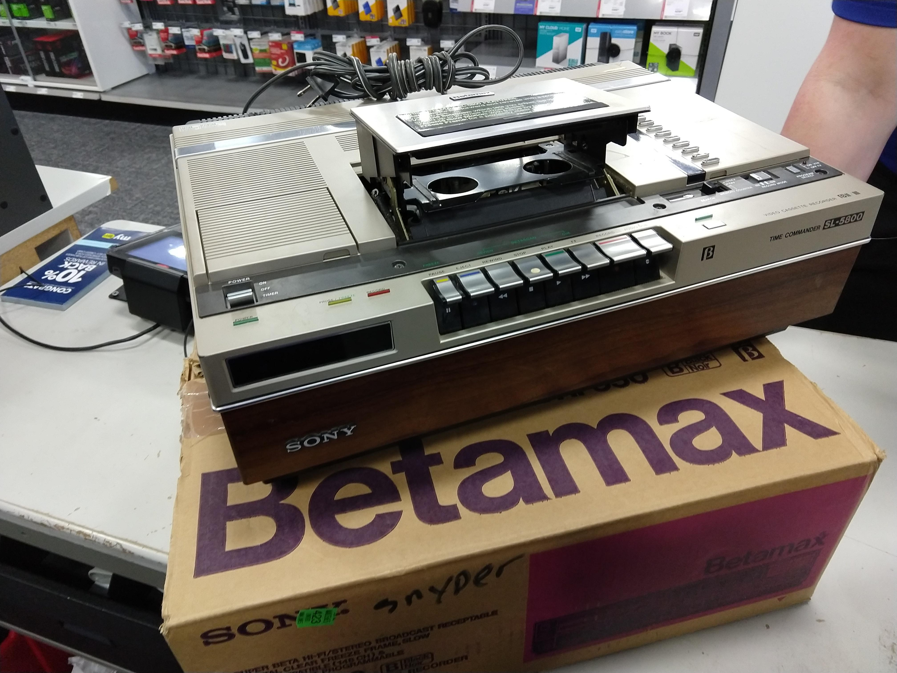
BetaMax Player
Introduced by Sony in 1975, the Betamax revolutionized home video recording.
Year: 1975
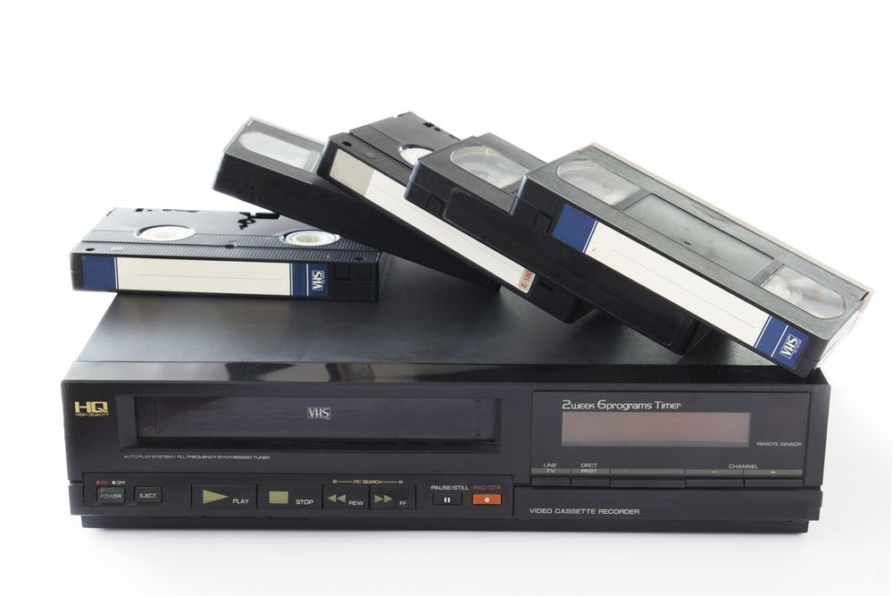
VHS Player
The VHS format emerged as a dominant video recording technology, surpassing Betamax.
Year: 1976

Philips LaserDisc Player
Pioneered optical disc playback, an early precursor to DVDs.
Year: 1978
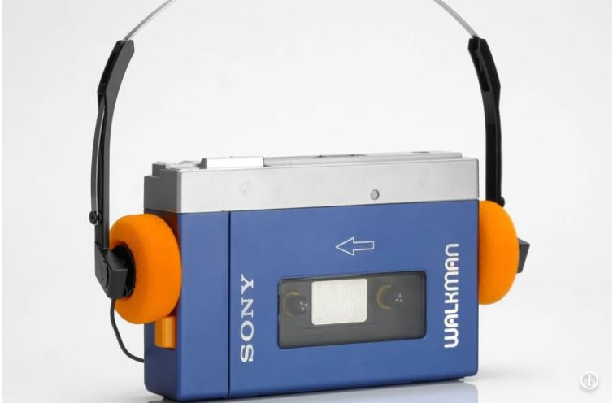
Sony Walkman
The first portable cassette player that revolutionized music consumption.
Year: 1979

Western Electric 5302 Rotary Phone
A classic rotary dial phone used extensively in the mid-20th century.
Year: 1980s
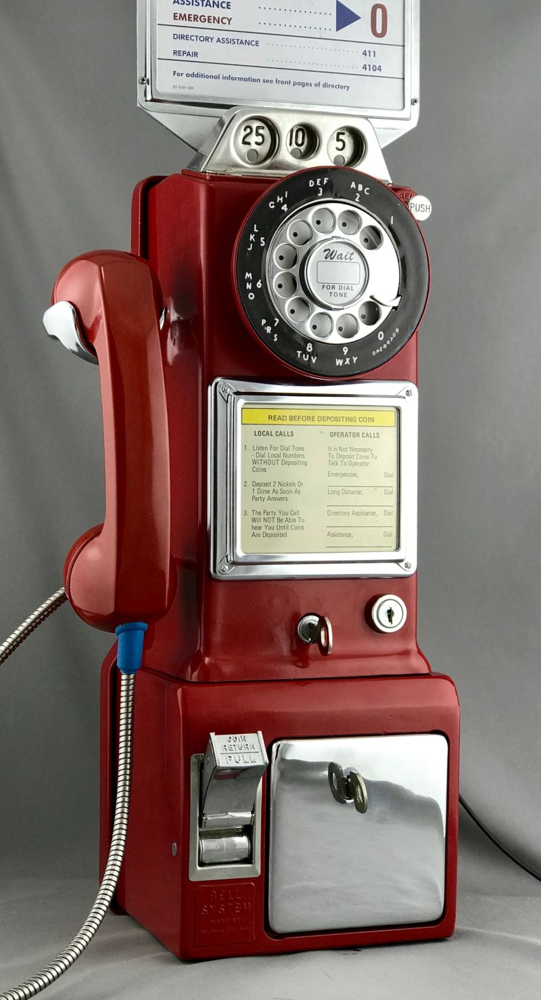
Red Payphone (25 cents)
Public payphone requiring a 25-cent coin for local calls.
Year: 1980s
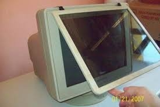
CRT Screen Protector
An accessory used in bulky CRT monitors throughout the 1980s and 1990s.
Years: 1980-1990

Atari Space Invaders Tabletop Arcade
A compact arcade gaming experience that brought Space Invaders into homes.
Year: 1980

IBM Personal Computer
One of the earliest IBM personal computers using dual 5-inch floppy drives.
Year: 1980
.jpg)
Sony Mini Cassette Recorder
A compact silver cassette recorder for portable audio recording.
Year: 1980
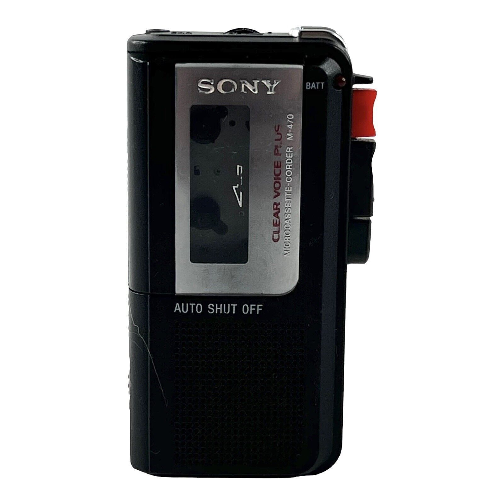
Sony Microcassette Corder
A smaller alternative to standard cassette recorders for voice notes.
Year: 1980

Tandy Color Computer
An affordable home computer featuring color graphics and BASIC programming.
Year: 1980
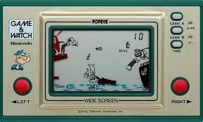
Popeye Game & Watch
A handheld LCD game based on the Popeye franchise, part of Nintendo’s Game & Watch series.
Year: 1981

Donkey Kong Game & Watch
A dual-screen handheld game featuring Donkey Kong, released by Nintendo.
Year: 1982

Nintendo Family Computer Game Cartridges
Various game cartridges released for the Family Computer from 1983 to the 1990s.
Years: 1983-1990s
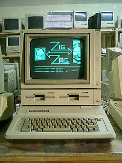
Apple IIe
An enhanced version of the Apple II series, improving expandability and keyboard design.
Year: 1983
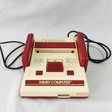
Nintendo Family Computer
The Nintendo Family Computer (Famicom) was released in Japan on July 15, 1983. It was Nintendo’s first home console, featuring 8-bit graphics and interchangeable game cartridges.
First games included Donkey Kong, Donkey Kong Jr., and Popeye: These arcade classics helped boost its popularity.
Global Expansion: The Famicom was redesigned and released in North America as the Nintendo Entertainment System (NES) in 1985. Discontinued in Japan (2003): After 20 years, Nintendo officially stopped production.
Year: 1983-2003
BellSouth
BellSouth, established in 1983, was a major telecommunications provider in the Southeastern United States, offering landline, mobile, and internet services. It remained a dominant player until its acquisition by AT&T in 2006, marking the end of its independent operations.
Year: 1983-2006
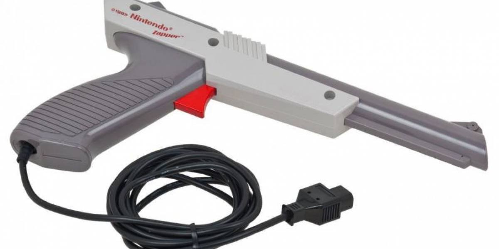
Nintendo Gun Controller
The Nintendo Gun Controller, known as the NES Zapper, was first released in Japan on February 18, 1984, for the Famicom. It later launched in North America on October 18, 1985, alongside the Nintendo Entertainment System (NES).
It was primarily used for light gun games like Duck Hunt, Wild Gunman, and Hogan’s Alley. The original Japanese version resembled a real revolver, but the North American version was redesigned to look more futuristic. In 1988, an orange version was introduced to comply with toy gun regulations
Year: 1984
.jpg)
Nintendo Entertainment System (NES)
The global release of Nintendo's iconic gaming console that shaped the industry. Released in North America on October 18, 1985, the NES played a crucial role in reviving the video game industry after the 1983 crash. The Nintendo Entertainment System (NES) was officially discontinued in North America and Europe on August 14, 1995
Year: 1985 - 1995
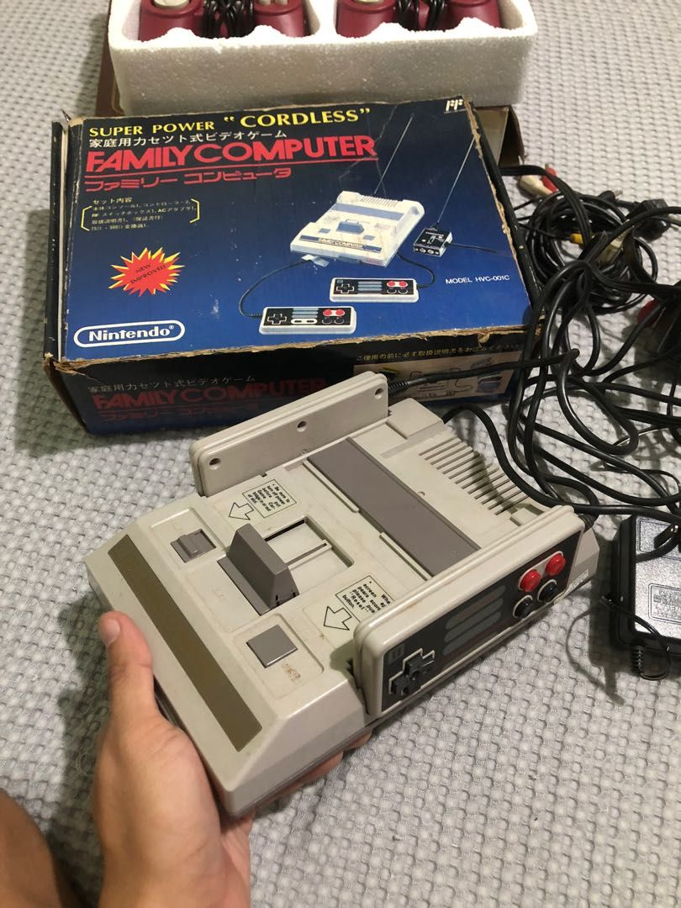
Nintendo Wireless Family Computer
The Nintendo Wireless Family Computer with an antenna was released in the Philippines in 1986, shortly after the EDSA Revolution. It was part of Nintendo’s Family Computer (Famicom) lineup, which was popular in Japan and other regions.
The Nintendo Wireless Family Computer was discontinued along with the original Famicom in Japan on September 25, 2003. This marked the end of its production after 20 years of service.
Year: 1986-2003

Nintendo NES Gold Game Cartridge
A rare gold-plated game cartridge for the Nintendo Entertainment System.
The Nintendo NES Gold Game Cartridges were released at different times, depending on the game.
Year: 1986-1990
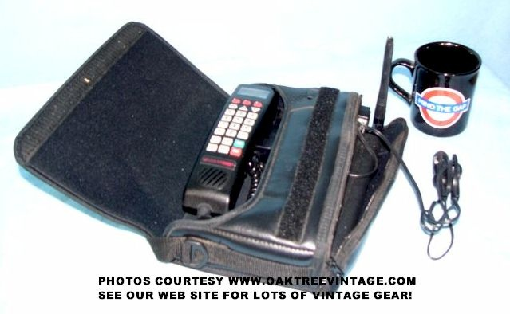
Motorola Bag Phone
A mobile phone carried in a bag, offering early cellular portability.
The Motorola Bag Phone was a transportable cellular phone introduced in 1988 and produced until 2000. It was designed for higher durability and stronger signal reception, making it popular among truckers, boaters, and rural users.
Year: 1988
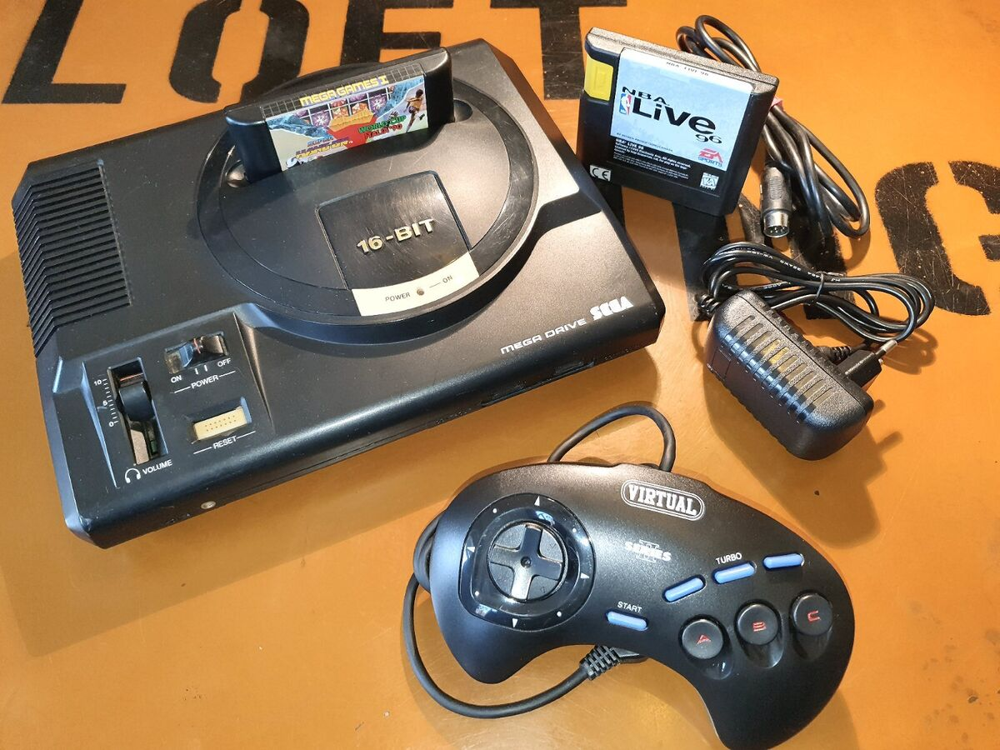
Sega Mega Drive (Genesis)
A popular 16-bit gaming console known for Sonic the Hedgehog and arcade-style games.
Year: 1988
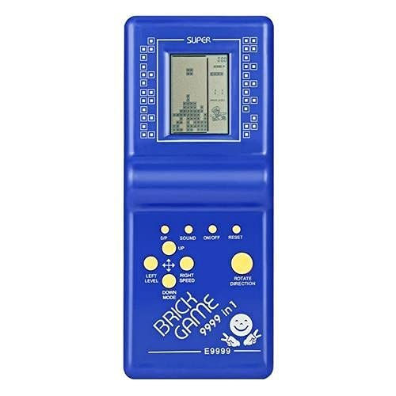
Brick Game Handheld
A simple handheld puzzle game featuring block-stacking challenges.
Year: 1990
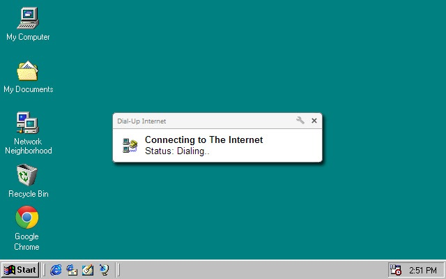
Dial-Up Screen
Commonly used during the 1990s and early 2000s, dial-up internet required a modem and phone line to connect online.
Year: 1990s-late 2000s

Toshiba Satellite 300
An early laptop providing advanced computing for business professionals.
Year: 1990

BBS Dial-Up Forums
Early online communities accessed through dial-up modems, allowing users to exchange messages and files.
Year: 1990s
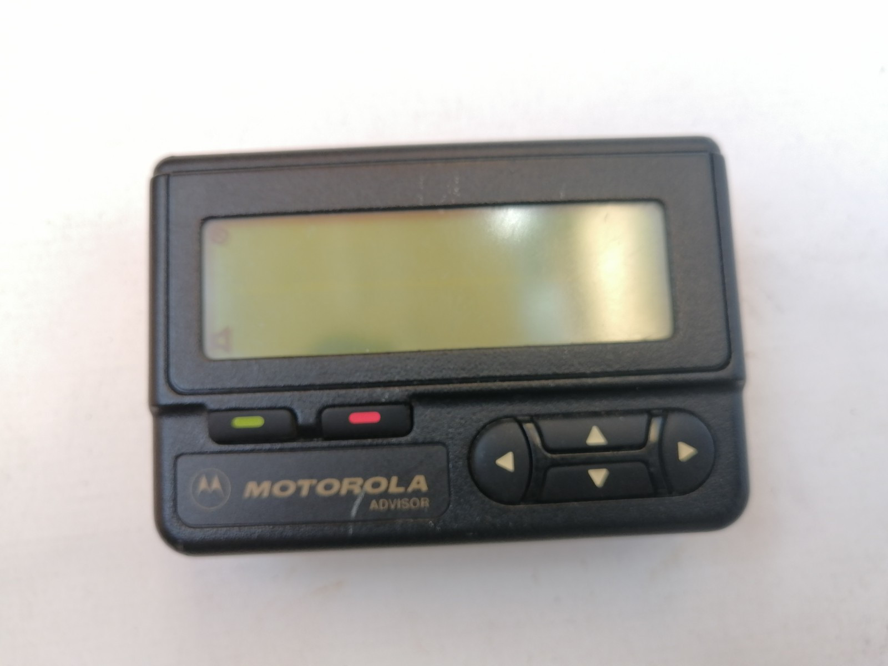
Motorola Beeper
A compact pager used for instant text-based communication.
Year: 1990s
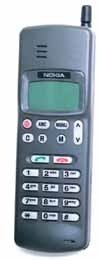
Nokia Mobile Phone
Reliable and durable mobile phones that dominated the late 1990s.
Year: Late 1990s
Brick Game Handheld
A simple handheld puzzle game featuring block-stacking challenges.
Year: 1990
Toshiba Satellite 300
An early laptop providing advanced computing for business professionals.
Year: 1990
Motorola Beeper
A compact pager used for instant text-based communication.
Year: 1990s
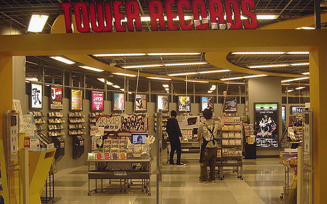
Tower Records Makati
An iconic music store that catered to audiophiles before shutting down in the mid-2000s.
Year: 1990s-mid-2000s
Nokia Mobile Phone
Reliable and durable mobile phones that dominated the late 1990s.
Year: Late 1990s
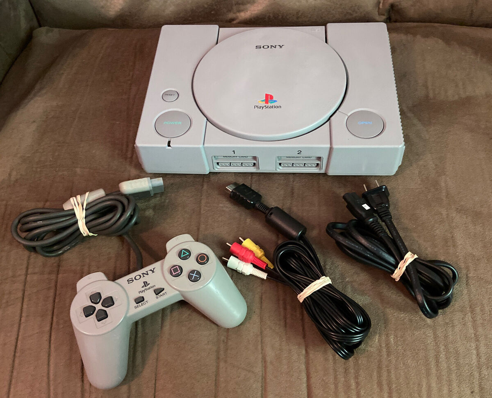
PlayStation 1 (PS1)
The first PlayStation console that revolutionized gaming.
Year: 1994

Lycos Search
One of the first search engines, launched in 1994, known for indexing millions of documents.
Year: 1994
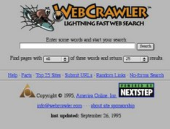
WebCrawler
The first full-text search engine, introduced in 1994, allowing users to search entire webpages.
Year: 1994

AltaVista Search
A groundbreaking search engine launched in 1995, known for its speed and innovative indexing.
Year: 1995

Internet Yellow Pages
A printed directory from 1995, listing websites before search engines became widely used.
Year: 1995

Yahoo
Originally a web directory, Yahoo evolved into a search engine and one of the most visited sites of the late 1990s.
Year: 1995
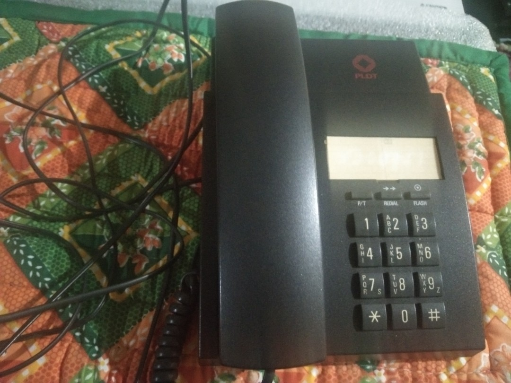
PLDT Landline
Traditional wired telephone service commonly used in Philippine households.
Year: 1995-2000

Wired Home Intercom Phones
Room-to-room communication system for homes.
Year: 1995-2000s
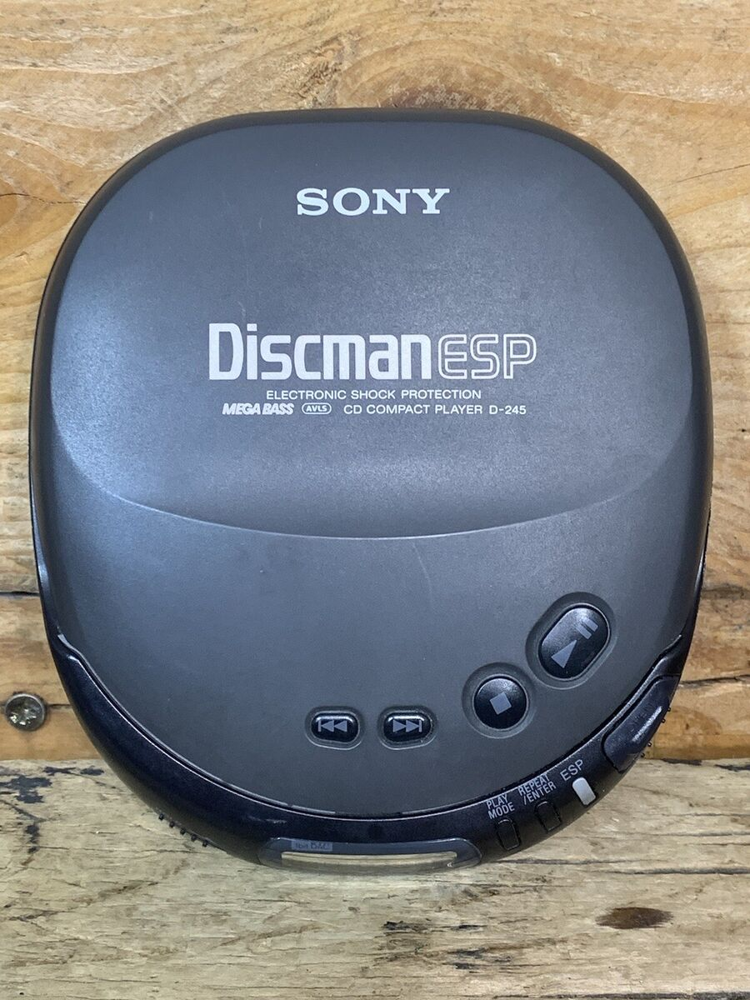
Sony Discman
A portable CD player that defined mobile music playback.
Year: 1996
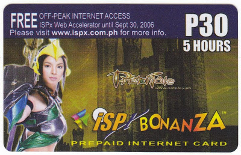
ISP Bonanza
A prepaid internet service in the Philippines during the late 1990s and early 2000s.
Year: 1996

Dogpile
A metasearch engine launched in 1996, aggregating results from multiple search engines.
Year: 1996

Tamagotchi Virtual Pet
Popular digital pet requiring feeding and care.
Year: 1996

Toshiba Satellite 100CS
A classic laptop offering compact computing for professionals.
Year: 1996
Sony Discman
A portable CD player that defined mobile music playback.
Year: 1996
Tamagotchi Virtual Pet
Popular digital pet requiring feeding and care.
Year: 1996
Toshiba Satellite 100CS
A classic laptop offering compact computing for professionals.
Year: 1996
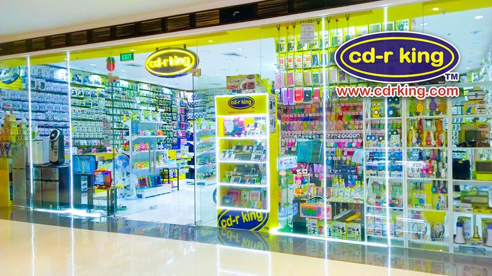
CD-R King Shop
A budget-friendly electronics store that peaked in popularity before closing in 2020.
Year: 1997-2020

Ask Jeeves
A question-based search engine launched in 1997, featuring a virtual butler character.
Year: 1997

Google Search
Founded in 1997, Google revolutionized search with its PageRank algorithm and clean interface.
Year: 1997
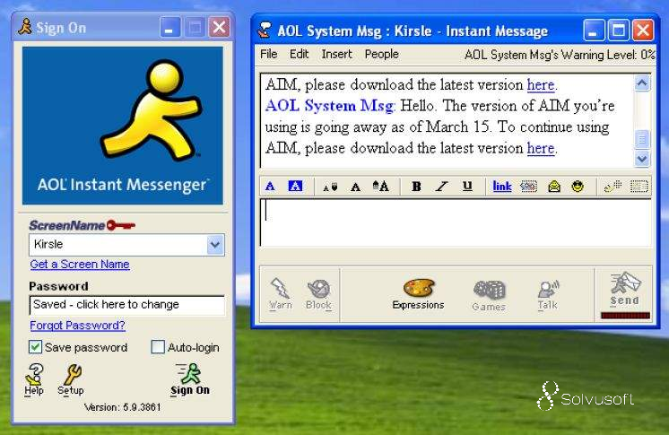
AOL Messenger
One of the earliest instant messaging platforms, widely used in the late 90s and early 2000s.
Year: 1997
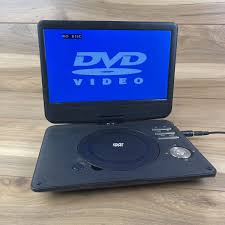
Portable DVD Player
Compact media device allowing movie playback on the go.
Years: 1997s-2000s
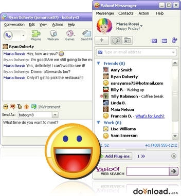
Yahoo Messenger
A popular instant messaging platform with chat rooms, file sharing, and voice calls.
Year: 1998
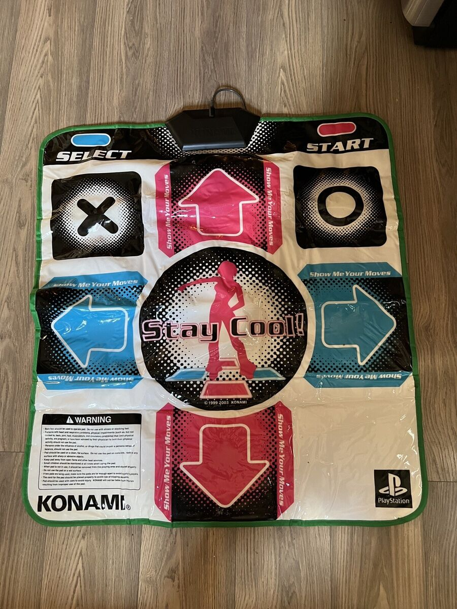
Dance Dance Revolution Mat
An interactive dance pad for rhythm-based gaming.
Year: 1998
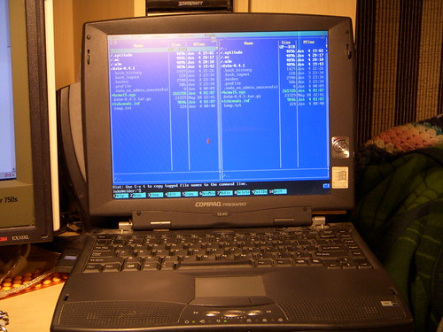
Compaq Presario 1240
An affordable home-use laptop with reliable performance.
Year: 1998
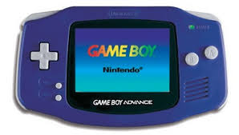
Game Boy (Purple)
A vibrant edition of Nintendo's handheld gaming device.
Year: 1998
 in Monochrome.jpg)
Nintendo Game Boy Light (Gold)
A rare gold edition of the Game Boy Light with a monochrome display.
Year: 1998
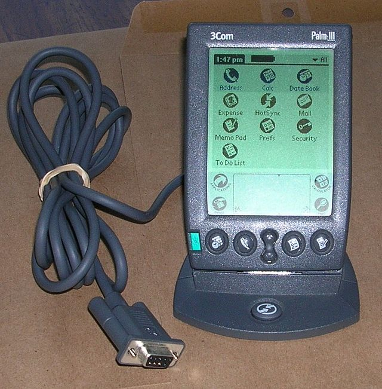
Palm III PDA
A personal digital assistant (PDA) for business professionals.
Year: 1998
RSS (Really Simple Syndication)
Introduced in 1999, RSS allowed users to subscribe to website updates and automatically receive content feeds.
Year: 1999
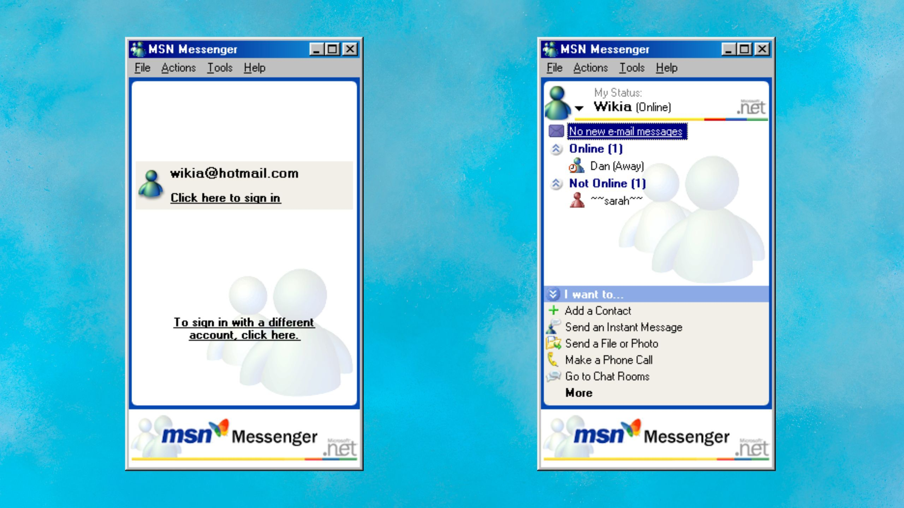
MSN Messenger
Microsoft’s instant messaging service, later rebranded as Windows Live Messenger.
Year: 1999
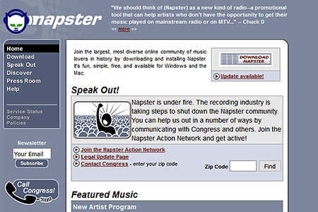
Napster
The first peer-to-peer music-sharing service, sparking a revolution in digital music distribution.
Year: 1999
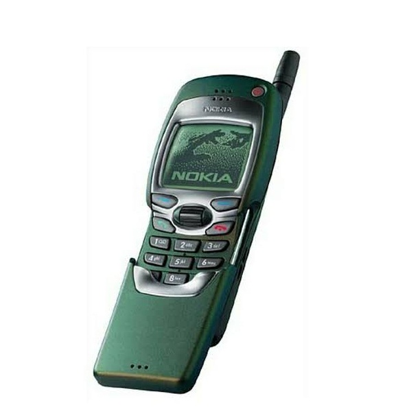
Nokia 7110
The first mobile phone with a web browser, featuring a sliding cover.
Year: 1999
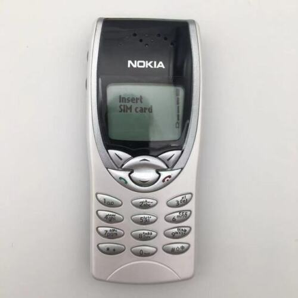
Nokia 8210
A compact and lightweight mobile phone known for its customizable covers.
Year: 1999
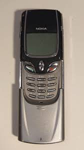
Nokia 8850
A luxury mobile phone with a sleek metallic design.
Year: 1999
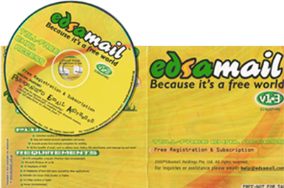
EDSAMail
A Philippine-based email service that operated in the early 2000s, offering free and paid accounts with built-in ads.
Year: 2000-2005
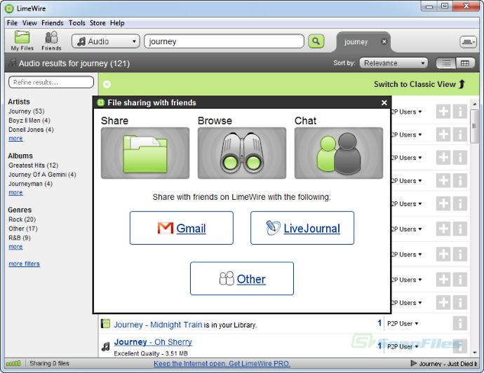
LimeWire
A peer-to-peer file-sharing software used for downloading music and other media.
Year: 2000

SBC Yahoo!
A collaboration between SBC Communications and Yahoo, providing broadband internet services until it transitioned to AT&T Yahoo! in 2005.
Year: 2000s-2005

Green Trimline Phones
Compact landline phone design with a dialpad on the handset.
Year: 2000

Panasonic KX-F1010 Fax Machine
A plain paper fax machine with built-in telephone features.
Year: 2000s
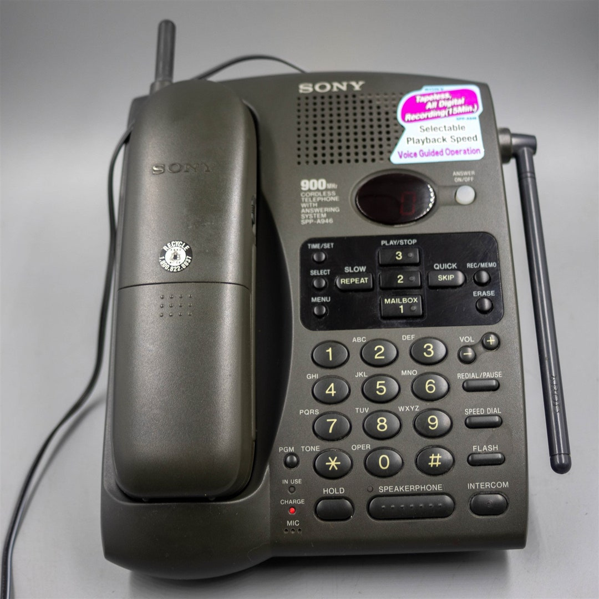
Wireless Landline
Portable landline phone designed for convenience.
Year: 2000
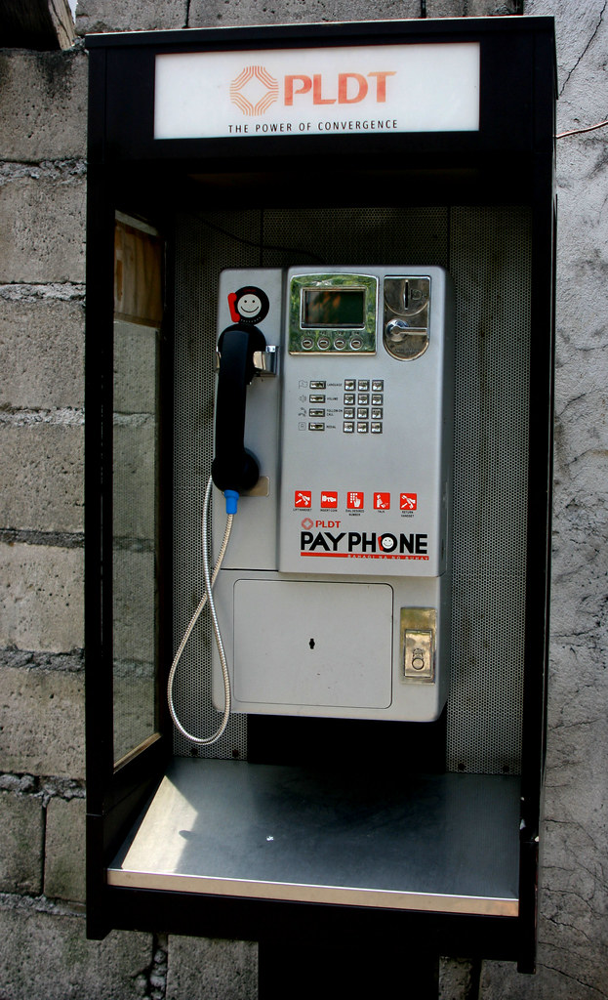
PLDT Payphone
Metal payphones installed in public areas, phased out by 2015.
Year: 2000s-2015
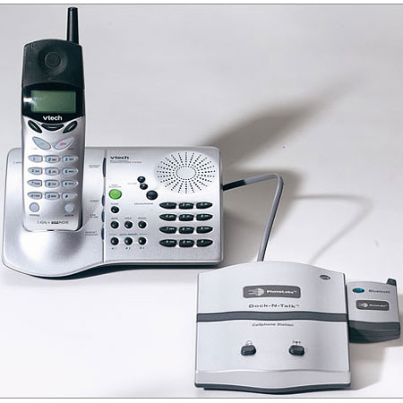
Wireless Landline (Docked)
A home landline with a cordless handset that docks for charging.
Year: 2000s
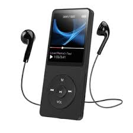
China iPod Clone
An imitation of Apple's iPod, popular in early 2000s markets.
Year: 2000
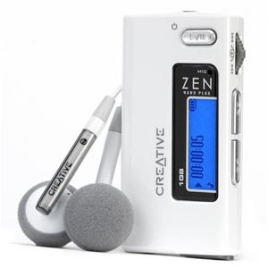
Creative Zen MP3 Player
A digital music player competing with Apple's iPod.
Year: 2000
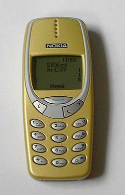
Nokia 3310
One of the most iconic mobile phones, known for durability and the Snake game.
Year: 2000
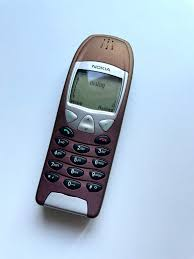
Nokia 6210
A business-class mobile phone with advanced connectivity features.
Year: 2000
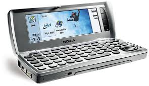
Nokia 9210 Communicator
A smartphone-like device with a full QWERTY keyboard and large screen.
Year: 2000
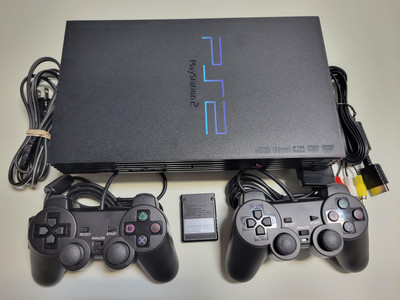
Sony PlayStation 2 (PS2)
The best-selling gaming console of all time, featuring extensive game support.
Year: 2000
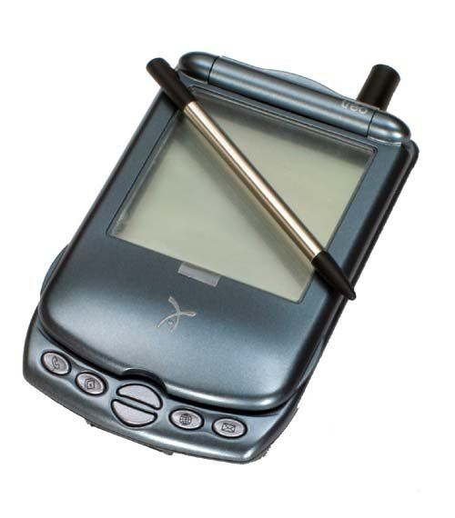
Handspring Treo 180 Communicator
An early smartphone combining PDA functionality with mobile communication.
Year: 2002
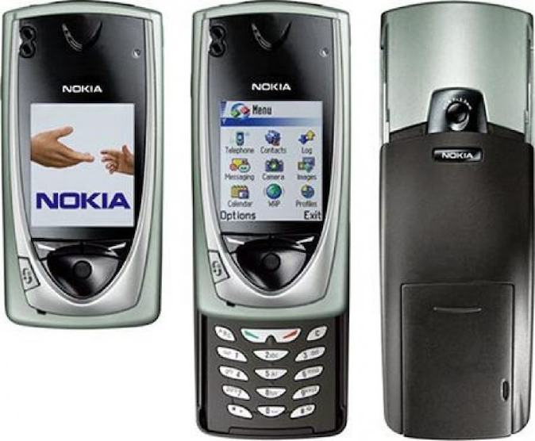
Nokia 7650
One of Nokia’s first smartphones featuring a built-in camera and sliding keypad.
Year: 2002
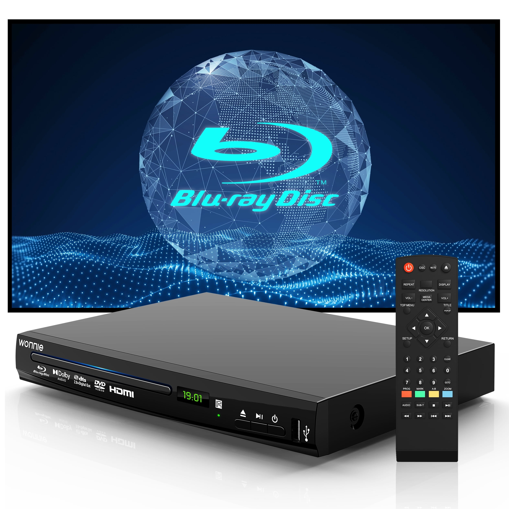
Blu-ray Player
Advanced optical disc technology replacing DVDs for high-definition content.
Year: 2003
Skype
The pioneering video chat and voice call service that revolutionized digital communication.
Year: 2003

The Pirate Bay
A controversial torrent site that facilitated peer-to-peer file sharing.
Year: 2003

Creative MuVo TX FM
A compact MP3 player featuring FM radio and basic storage.
Year: 2004

iPod 4th Generation
Apple’s popular music player with an improved click-wheel interface.
Year: 2004
Motorola Razr V3 Silver
A stylish flip phone that became a cultural icon with its slim design.
Year: 2004
iPod Shuffle (Blue)
Apple’s compact, screenless music player designed for simplicity.
Year: 2005

Motorola SLVR L7
A slim mobile phone with a stylish candy-bar design and iTunes integration.
Year: 2005
Nokia 7360
A fashionable mobile phone with stylish accents and practical features.
Year: 2005
iPod Shuffle (2nd Gen)
Ultra-portable MP3 player with a clip-on design for hands-free usage.
Year: 2006
Sports In-Ear Bluetooth Earphone
Designed for active users, offering wireless convenience and sweat resistance.
Year: 2008
Cignal TV Satellite
Premier satellite TV service launched in the Philippines in 2009.
Year: 2009-Present

Blackberry 9800
A smartphone featuring a sliding QWERTY keyboard and touchscreen interface.
Year: 2010
MyPhone Mini
A compact and affordable Android phone designed for basic smartphone use.
Year: 2010
Earhook Bluetooth Earphones
Stable-fitting wireless earphones designed for sports and active lifestyles.
Year: 2010

Beats Bluetooth Noise Cancelling Earphone
High-fidelity wireless earphones with advanced noise cancellation technology.
Year: 2010s
iPad 2
Apple’s second-generation tablet with a slimmer design and improved performance.
Year: 2011
iPad 4
An upgraded iPad featuring a Retina display and Lightning connector.
Year: 2012
iPhone 5s
Apple’s first smartphone to introduce a fingerprint sensor (Touch ID).
Year: 2013
Cherry Mobile Alpha Luxe
A Windows-powered budget smartphone with a sleek design.
Year: 2014
Google Cardboard 2 VR Headset
A foldable and affordable VR headset by Google, enabling immersive experiences using a smartphone.
Year: 2014

VR BOX Virtual Reality 3D Glasses
A budget-friendly mobile VR headset designed for **360-degree viewing** and interactive experiences.
Year: 2015
ABS-CBN TV Plus
Digital TV service launched in 2015, discontinued in 2020.
Year: 2015-2020
MyPhone My111
A budget-friendly smartphone offering essential Android features.
Year: 2015
iPhone 6s (Gold)
An advanced iPhone featuring 3D Touch and an improved 12MP camera.
Year: 2015
X3 Game Controller Smart Wireless Bluetooth
A **versatile gaming controller** supporting **Bluetooth and wired connections**, compatible with mobile and PC.
Year: 2015-2017
Asus Zenfone Max (2016)
A smartphone known for its massive 5000mAh battery, offering extended usage time.
Year: 2016
Asus Zenfone Max Pro (2018)
A powerful mid-range device, featuring a large battery and enhanced performance.
Year: 2018